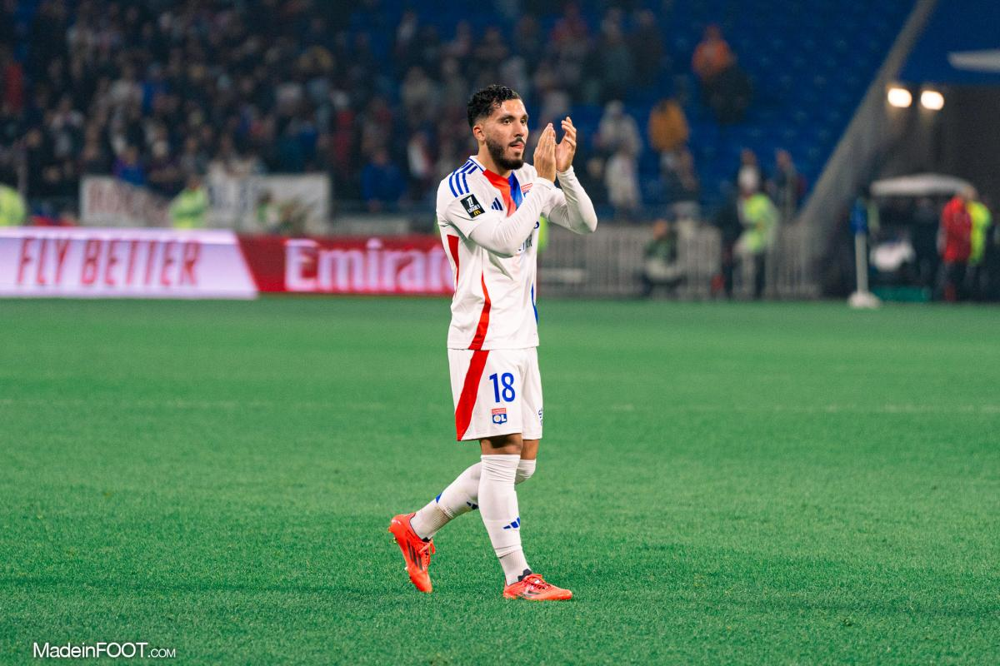

Logros Individuales
- Ganador del premio al "Mejor Jugador Joven de Europa 2026"
- Máximo goleador de la temporada 2025/2026: 22 goles
- Jugador del mes (Enero 2026)
- Parte del equipo ideal de la UEFA Champions League 2026
Temporada 2025/2026
| Competición | Partidos | Goles | Asistencias | Minutos |
|---|---|---|---|---|
| La Liga | 25 | 14 | 7 | 2100' |
| UEFA Champions League | 6 | 5 | 2 | 540' |
| Copa del Rey | 4 | 2 | 1 | 360' |
En el Terreno de Juego

